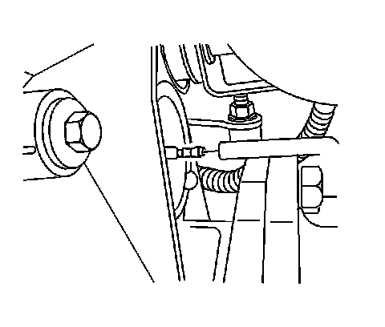
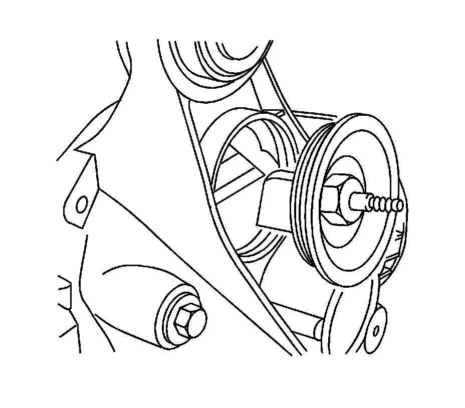

Front Axle Vent Hose Connector Replacement (9.25 Inch Axle)
Front Axle Vent Hose Connector Replacement (9.25 Inch Axle)
Removal Procedure
1. Raise the vehicle. Refer Lifting and Jacking the Vehicle.

2. Disconnect the vent hose from the vent hose connector.

3. Remove the vent hose connector from the differential carrier assembly.
Installation Procedure
1. Install the vent hose connector into the differential carrier assembly.
Apply a small amount of sealer GM P/N 12346004 (Canadian P/N 10953480) or equivalent onto the threads.
Notice: Refer to Fastener Notice.
2. Tighten the vent hose connector.
Tighten the vent hose connector to 28 Nm (21 lb ft).
3. Connect the vent hose to the vent hose connector.
4. Lower the vehicle.